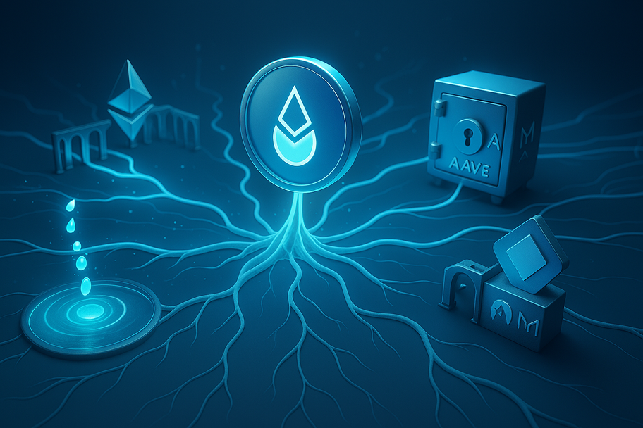
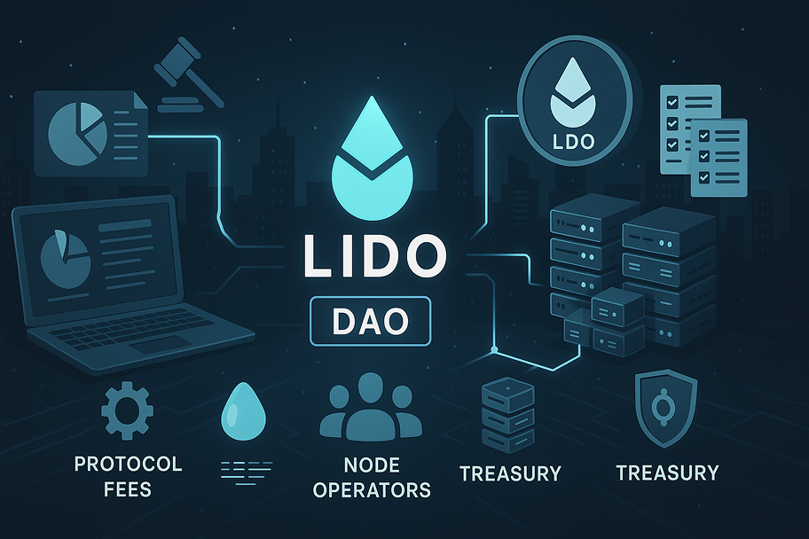

Liquid staking through Lido Finance transforms the traditional ETH staking experience, allowing users to stake ETH while receiving stETH tokens that remain liquid and usable across the DeFi ecosystem.
Liquid staking has fundamentally changed the crypto landscape by solving one of the most significant challenges in proof-of-stake networks: the forced illiquidity of staked assets.
At the forefront of this innovation stands Lido Finance, the dominant protocol that has revolutionized how users stake ETH while maintaining liquidity through its stETH (Lido Staked ETH) tokens.
By enabling stakers to participate in securing the Ethereum network without locking up their assets, Lido has created a powerful new financial primitive that combines the yield-generating benefits of staking with the flexibility and utility of liquid tokens.
This comprehensive exploration delves into how liquid staking works, why Lido Finance has become the market leader, and how users can leverage this technology to maximize their Ethereum holdings' potential.
Before exploring the practical applications, it's essential to understand the fundamental concepts behind liquid staking and Lido's implementation.
Liquid staking represents a paradigm shift in how proof-of-stake participation works:
This innovation has proven particularly important for Ethereum, where traditional staking requires a significant 32 ETH minimum and technical expertise to operate a validator.
Lido's implementation of liquid staking incorporates several key components:
This architecture has allowed Lido to capture a dominant market share in Ethereum liquid staking, securing over 30% of all staked ETH.

Understanding the technical underpinnings of Lido helps users appreciate the security and reliability of the protocol.
Lido's system comprises several interconnected smart contracts:
This modular design allows for upgradability and specialized handling of different protocol functions.
The stETH token incorporates sophisticated tokenomics:
This mechanism creates a seamless user experience while ensuring fair distribution of staking returns.
The process of staking ETH through Lido is designed to be straightforward and accessible.
Follow these steps to begin staking with Lido:
This process removes the technical barriers associated with running your own validator node.
After staking, there are several considerations for managing your position:
Proper position management ensures you maximize the benefits of liquid staking while minimizing potential risks.

One of the most powerful aspects of liquid staking is the ability to use stETH throughout the DeFi ecosystem.
Numerous DeFi protocols have integrated with Lido's stETH:
These integrations create a vibrant ecosystem where stETH can be deployed for various financial strategies.
Creative users have developed sophisticated strategies utilizing stETH:
These strategies allow for "leveraging the yield" by stacking multiple return sources on top of base staking rewards.
While multiple liquid staking solutions exist, Lido has maintained a dominant position in the market.
Comparing Lido to alternative liquid staking protocols reveals several key differences:
These factors contribute to Lido's market-leading position despite increasing competition.
Critics have raised important considerations about liquid staking centralization:
Understanding these concerns helps users make informed decisions about participating in liquid staking.
While liquid staking offers numerous benefits, users should be aware of potential risks.
Several technical risk factors merit consideration:
Lido implements various safeguards to mitigate these risks, but they cannot be eliminated entirely.
Economic considerations also present potential challenges:
These market risks vary based on broader crypto market conditions and should factor into investment decisions.
Liquid staking has significantly influenced Ethereum's economic landscape.
Several macro-level effects have emerged:
These factors collectively represent a profound shift in how value flows through the Ethereum ecosystem.
Several developments will shape liquid staking's future:
These developments will continue to refine the liquid staking experience while addressing current limitations.
Liquid staking is an innovative approach that solves the illiquidity problem of traditional Ethereum staking by providing users with tradable tokens representing their staked ETH. While conventional staking requires locking up 32 ETH to run a validator and immobilizes those assets until withdrawals are enabled, liquid staking through platforms like Lido Finance allows users to stake any amount of ETH and receive stETH tokens in return. These stETH tokens represent both the original stake and the continuously accruing staking rewards. The key difference is that stETH can be freely traded, used in DeFi applications, or held in wallets while simultaneously generating staking yields—effectively allowing users to maintain liquidity while participating in network security. Additionally, liquid staking removes the technical barriers of running validator infrastructure and the 32 ETH minimum requirement, making staking accessible to a much broader audience.
Lido Finance employs multiple security layers to protect staked ETH. First, the protocol distributes staked ETH across a diverse set of professional node operators who are thoroughly vetted by the Lido DAO for technical expertise, security practices, and historical performance. This prevents concentration risk with any single operator. Second, Lido's smart contracts have undergone multiple independent security audits from firms like Quantstamp, MixBytes, and SigmaPrime. Third, the protocol implements a defense-in-depth approach with secure oracle infrastructure for reporting staking rewards, with multiple independent oracle operators required to confirm data. Fourth, Lido maintains an insurance fund to help cover potential slashing events. Fifth, the protocol uses gradual parameter upgrades with timelock mechanisms to prevent sudden changes. Finally, Lido's governance is controlled by the Lido DAO, requiring consensus among token holders for significant changes. While no system is completely risk-free, these measures create a robust security framework that has successfully secured billions in assets.
If Ethereum experiences slashing events affecting Lido's validators, the impact is socialized across all stETH holders proportionally. When a validator is slashed for rule violations, Ethereum's protocol imposes penalties on their stake. In Lido's system, these penalties reduce the total ETH backing all stETH tokens, slightly decreasing the ETH redemption ratio. This means all stETH holders share the cost of slashing events rather than any individual bearing the full impact. To minimize this risk, Lido carefully selects professional node operators with strong security practices and maintains a conservative validator management approach. Additionally, the protocol has implemented an insurance fund that can help cover minor slashing events. Historically, slashing events have been rare and their impact on the stETH token value has been minimal, often less than 0.1% when they occur. This socialized risk model is a fundamental design choice that enables Lido to provide liquid staking while distributing the technical risks of validation.
Staking rewards with Lido Finance accrue automatically through a rebasing mechanism that increases the balance of stETH tokens in users' wallets. Here's how it works: When validators operated by Lido's node operators earn Ethereum staking rewards (currently averaging 3-5% annually), these rewards are reported by Lido's oracle system. The protocol then increases all stETH token balances proportionally to reflect these new rewards, minus a 10% fee (with 5% going to node operators and 5% to the Lido DAO treasury). This rebasing occurs daily, meaning stETH holders see their token balance grow over time without needing to perform any actions or claim rewards manually. For example, if you stake 10 ETH, you might see your stETH balance grow to 10.3 ETH after a year of staking. Rewards include both attestation rewards for normal validation duties and occasional MEV (Maximal Extractable Value) rewards from transaction ordering. This seamless reward distribution mechanism is one of Lido's key user experience advantages compared to traditional staking.
Yes, you can convert your stETH back to ETH through two primary methods, but there are some considerations. The first method is using Lido's native withdrawal feature, which became available after Ethereum's Shanghai/Capella upgrade. This process involves requesting a withdrawal through Lido's interface, joining a queue determined by Ethereum's processing capacity, and typically receiving your ETH within a few days. This method ensures a 1:1 exchange rate minus a small protocol fee. The second method is selling stETH on secondary markets like Curve, Balancer, or Uniswap. This provides immediate liquidity but may result in slippage or exchanging at a discount if market conditions are unfavorable. During normal conditions, stETH trades very close to ETH's value, but during market stress (as seen in June 2022), discounts can temporarily widen. For users wanting the flexibility to quickly exit positions, maintaining awareness of market conditions and liquidity options is important. For long-term holders, the native withdrawal process provides the most reliable redemption mechanism.
Providing liquidity to stETH/ETH pools carries several specific risks that liquidity providers should understand. First, impermanent loss risk is present but typically minimal compared to more volatile pairs, as stETH and ETH usually maintain a close price relationship. However, during market stress periods, this risk increases if stETH trades at a discount to ETH. Second, smart contract risk exists in both the liquidity pool contracts and the underlying stETH token contracts—multiple layers of potential vulnerability. Third, there's protocol-specific risk related to the particular DEX where liquidity is provided (Curve, Balancer, etc.). Fourth, high gas costs on Ethereum can impact profitability, particularly for smaller positions or frequent rebalancing. Fifth, tax complexity increases as providing liquidity may trigger multiple taxable events. Sixth, there's governance risk as Curve gauge weights or other incentive parameters might change. Finally, while liquidity providers earn trading fees and sometimes additional incentives, these must be balanced against the potential for stETH/ETH pool imbalances during market volatility. Sophisticated users often employ these pools as part of broader strategies, such as leveraged staking or hedged positions.
wstETH (wrapped stETH) differs from regular stETH primarily in how it handles staking rewards. While stETH is a rebasing token whose balance increases in your wallet as staking rewards accrue, wstETH maintains a constant token balance but increases in value relative to stETH over time. This fundamental difference creates several practical distinctions: First, wstETH is significantly more compatible with DeFi protocols that don't properly support rebasing tokens, making it the preferred version for many applications. Second, wstETH simplifies accounting and tax reporting as you hold a stable number of tokens with a changing exchange rate rather than a growing token balance. Third, gas costs can be lower for repeated transactions since you're interacting with fewer tokens. Fourth, the fixed supply nature of wstETH makes it behave more like traditional ERC-20 tokens, avoiding potential bugs or edge cases with rebasing implementations. Users can freely convert between stETH and wstETH at any time through Lido's interface, with the conversion rate constantly updating to account for accumulated staking rewards.
Lido Finance's liquid staking creates a complex impact on Ethereum's decentralization with both potential benefits and concerns. On the positive side, Lido has democratized staking access by removing the 32 ETH requirement and technical barriers, allowing more participants to earn staking rewards and theoretically broadening network participation. Additionally, Lido's validator set (currently over 30 operators) is more diverse than if those funds were concentrated with a few centralized exchanges. However, critics highlight several centralization concerns: Lido has secured over 30% of all staked ETH, approaching theoretical attack vectors if it crossed 33% or 51%. The node operator set, while diverse, remains permissioned rather than open. Lido DAO governance power has concentration among early investors and team members. There's also systemic risk from so much ETH using a single staking protocol. Lido has acknowledged these concerns and implemented measures like a self-limiting mechanism for market share, but the discussion represents an important governance and security consideration for the broader Ethereum ecosystem as it balances liquid staking benefits against potential centralization vectors.